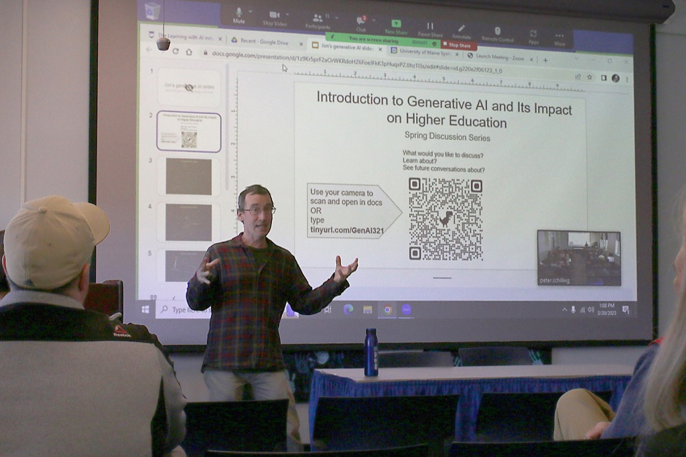

AI Foundations for Educators
Using generative AI thoughtfully, ethically, and effectively in teaching and learning
Course Logistics
Course Code: INT 598 - 0190 (49493)
Full Title: Special Topics in Interdisciplinary Studies - AI Foundations for Educators
- Schedule: Asynchronous online class
- Instructor: Peter Schilling
- Dates: 03/09/2026 - 04/20/2026 (5 weeks + spring break)
- Prerequisites: None. Open to anyone with a BA as well as UMaine undergraduates
- Prior AI Experience: Not required
- Tuition: UMaine distance learning discount applies
Course Description
This course trains educators and instructional professionals to use generative AI tools such as ChatGPT and Gemini thoughtfully, ethically, and effectively in teaching and learning. Participants examine how AI systems shape cognition, inquiry, and skill development, and develop strategies for structuring AI use to support rather than shortcut learning.
The course emphasizes reflective, self-aware practices: understanding the limits and parameters of AI, recognizing risks of overreliance, and adopting pedagogical approaches that integrate AI in ways that enhance student agency and understanding.
Participants leave with a personalized framework for using AI tools to:
- Design grade-appropriate learning experiences.
- Improve their own workflows.
- Support student learning across diverse contexts.
The lead instructor, Peter Schilling, is Executive Director of Innovation in Teaching and Learning at the University as well as a Graduate Faculty in Instructional Technology in the College of Education and Human Development. The course will feature additional contributions by other Learning With AI faculty, including Professor of New Media Jon Ippolito.
Course Introduction

These are the very early days of AI in education.
Whether we condemn or praise AI, we are still reacting to that first stage of engaging with a new technology. At this time we can only think to ask it to do tasks we performed before we knew about AI.
Educators ask AI to generate a rubric, write an essay or grade a paper. This use of AI resembles the first radio programs, which consisted of a man reading a newspaper, and the first TV programs, which were nothing more than radio actors standing around a microphone.
We don't consider the ways in which AI represents an epistemological shift for many disciplines and professions.
In this course we will examine the evolutionary stages of educators' engagement with AI. Students will also consider the role of AI and its role in learning at different levels of students' educational journey.
Above: Peter Schilling at a Learning With AI workshop in 2023.
How to Apply
Before applying, please note: UMaine's distance learning tuition discount applies to this course. This 1-credit graduate course is open to anyone with a BA as well as UMaine undergraduates. No prior AI experience is required.